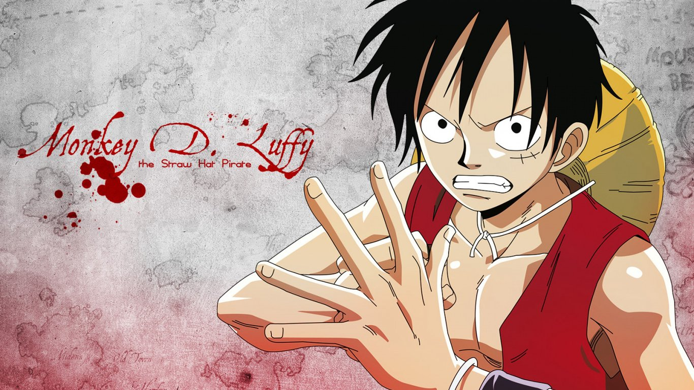

传奇海盗哥尔·D·罗杰在临死前曾留下关于其毕生的财富“One Piece”的消息，由此引得群雄并起，众海盗们为了这笔传说中的巨额财富展开争夺，各种势力、政权不断交替，整个世界进入了动荡混乱的“大海贼时代”。生长在东海某小村庄的路飞受到海贼香克斯的精神指引，决定成为一名出色的海盗。为了达成这个目标，并找到万众瞩目的One Piece，路飞踏上艰苦的旅程。一路上他遇到了无数磨难，也结识了索隆、娜美、乌索普、香吉、罗宾等一众性格各异的好友。他们携手一同展开充满传奇色彩的大冒险。
《秦时明月》的故事背景取自秦始皇帝灭六国到西楚霸王项羽攻陷咸阳这段英雄辈出的历史时期，是一部以武侠为主题的全民型动漫，伴随着古灵精怪却又年少轻狂的主角荆天明去冒险，观众会切身体会到其成长的心灵历程；此外，豪侠剑客如盖聂、高渐离；神秘隐士如墨家、阴阳家、及各门各派的众多高手；纵横捭阖的秦始皇、少年项羽（即项少羽），这些众所周知的历史人物在出场时有了更具时代感的表现。
中国首部玄幻武侠动画。在神坠试练的过程中，辰月、千钧、游不动及碧婷等等少年‘侠岚’们，凭借自身的实力、超群的智力以及强大的凝聚力，不断地进行着自我的提升，并通过比赛，巩固了友情。可就在神坠试练正进行得如火如荼的时候，山鬼谣竟然将‘零’引进了玖宫岭，欲抢夺玖宫岭的至宝——‘侠岚神坠’，大战一触即发。
十多年前一只拥有巨大威力的妖兽“九尾妖狐”袭击了木叶忍者村，当时的第四代火影拼尽全力，以自己的生命为代价将“九尾妖狐”封印在了刚出生的鸣人身上。木叶村终于恢复了平静，但村民们却把鸣人当成像“九尾妖狐”那样的怪物看待，所有人都疏远他。鸣人自小就孤苦无依，一晃十多年过去了，少年鸣人考入了木叶村的忍者学校，结识了好朋友佐助和小樱。佐助是宇智波家族的传人之一，当他还是小孩的时候他的哥哥——一个已经拥有高超忍术的忍者将他们家族的人都杀死了，然后投靠了一直想将木叶村毁灭的大蛇丸，佐助自小就发誓要超越哥哥，为家族报仇。鸣人他们在忍者学校得到了教官卡卡西的精心指点，在他的帮助下去迎接成长中的一次又一次挑战！